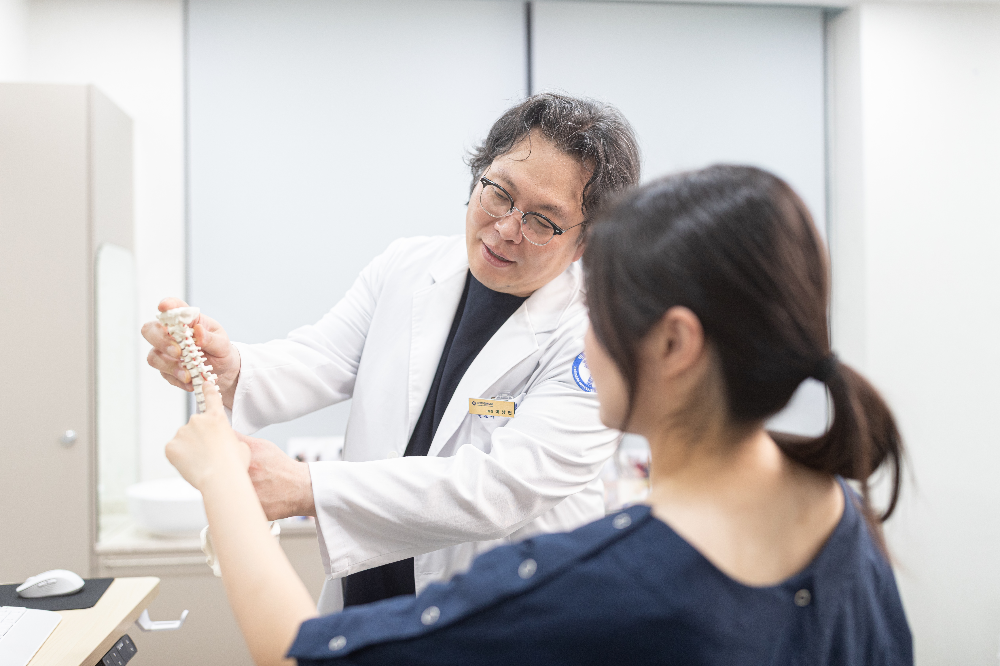
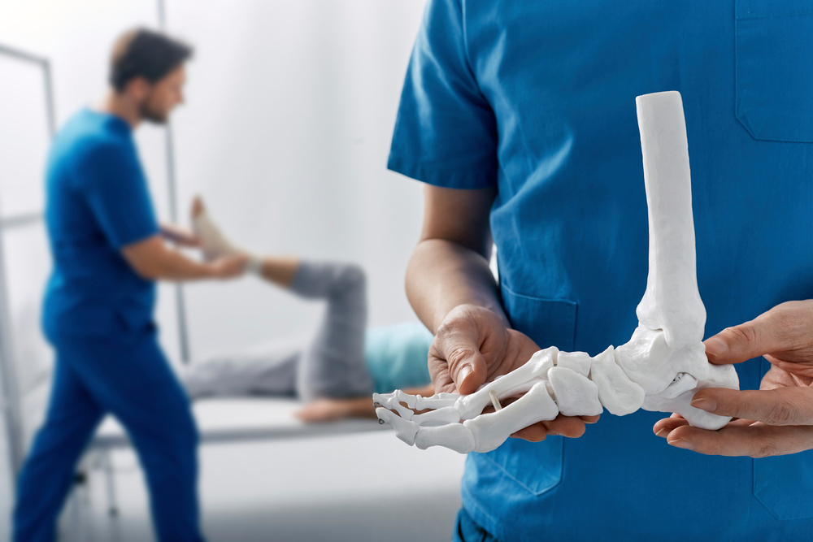

보호·통증 관리
상태에 따라 보조기와 약물을 사용해 발목을 보호하고 통증을 줄입니다.
발목을 지지하는 인대가 늘어나거나 찢어지면
통증과 부종에 더해 관절의 불안정해질 수 있습니다.
발목 인대는 뼈와 뼈를 연결해 관절을 안정적으로 지지합니다.
인대는 다양한 인대 손상의 한 형태이며, 심한 손상이나 불충분한 회복 뒤에는 반복적으로 접질릴 수 있습니다. 통증뿐 아니라 관절의 흔들림과 동반 손상도 함께 살펴봅니다.

인대가 견딜 수 있는 범위를 넘는 힘이 가해지면
부분 손상부터 완전 파열까지 발생할 수 있습니다.
발목이 안쪽이나 바깥쪽으로 꺾이면 인대가 지나치게 늘어날 수 있습니다.
점프 후 착지나 급격한 방향 전환은 발목 인대에 큰 부담을 줄 수 있습니다.
같은 부위를 반복해서 다치면 관절의 불안정성이 남을 수 있습니다.
근력과 균형 회복이 충분하지 않으면 다시 접질릴 가능성이 커집니다.
인대 주변의 통증과 부종, 멍이 생길 수 있으며
이후에도 발목이 흔들리거나 자주 접질릴 수 있습니다.
초기에는 통증과 부종을 관리하고 발목을 보호하며
회복에 따라 근력과 균형을 되찾는 재활을 시행합니다.
상태에 따라 보조기와 약물을 사용해 발목을 보호하고 통증을 줄입니다.

관절의 움직임과 근력, 균형을 회복해 다시 접질리는 위험을 줄입니다.

재활 후에도 불안정성이 지속되면 인대 봉합·재건 등의 필요성을 살핍니다.
염좌는 인대가 늘어나거나 부분·완전히 찢어지는 손상을 포함합니다. 명칭만으로 심한 정도를 판단하지 않고 진찰과 필요 시 검사로 평가합니다.
손상 정도와 관절 불안정성, 동반 손상 및 치료 경과에 따라 다릅니다. 보호·고정과 재활 등의 비수술치료를 검토하는 경우도 있습니다.
필요한 보호 방법과 기간은 손상 상태에 따라 달라집니다. 임의로 장기간 고정하기보다 움직임과 근력 회복을 포함한 계획을 안내받으세요.